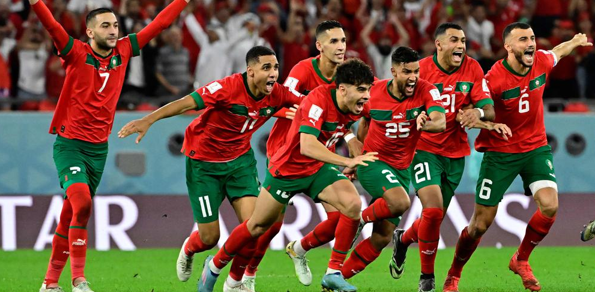
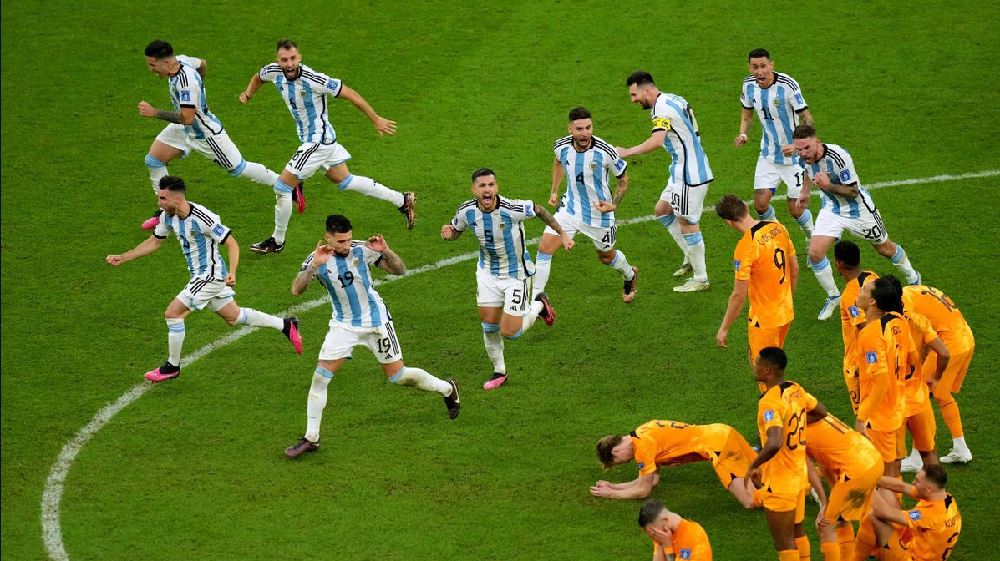
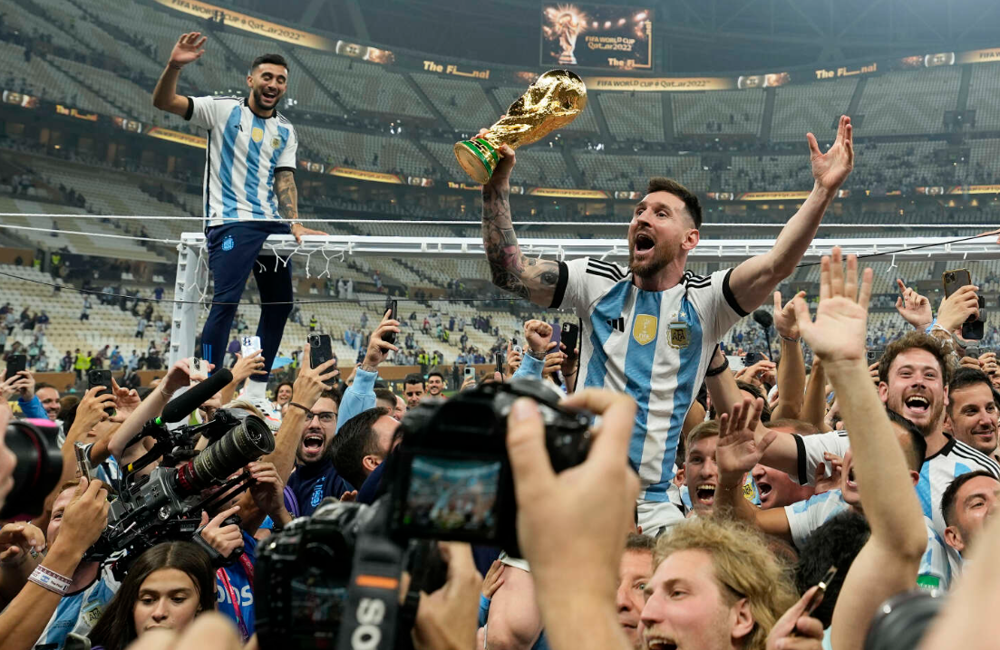

Moments forts
Voici quelques moments forts de la Coupe du Monde 2022...
L'épopée marocaine
L'équipe nationale de football du Maroc a marqué l'histoire en devenant la première équipe arabe et africaine à atteindre les demi-finales...
Un Pays-Bas - Argentine sous tension
De vives tensions ont émaillé ce match...
Lionel Messi et l'Argentine sur le toit du monde
C'est l'image finale de cette compétition plus que controversée...